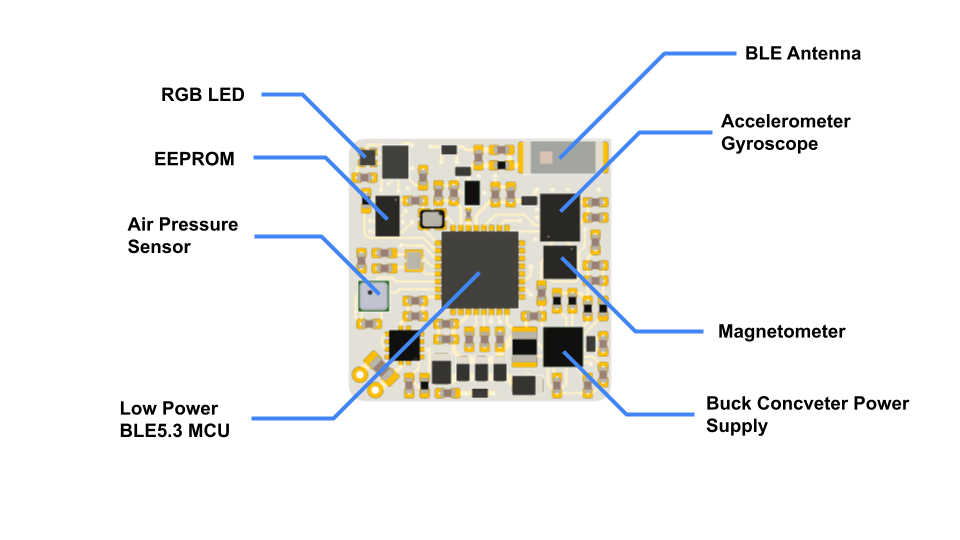

BLE Sensor - B10 (10 Dof IMU)

Layout

Technical Specification
General Details
Parameter Size (PCB only) 17mm x 17mm x 2mm Size (with case and battery) 24mm x 24mm x 7mm Communication Interface BLE 5.0 Charging Interface Contact Point Battery Capacity 40mAh Battery Type Rechargeable Lithium battery Battery Life (standby) ~4 weeks Battery Life (recording - raw data) >12 hours Battery Recharge Time ~2 hours Accelerometer
Parameter Accel Range ± 16 g Accel Resolution 16-bits Output Data Rate 1.6Hz ~ 416Hz Accel Noise 70 ug/√Hz Supported command in the Inertial measurement unit (IMU) section.
Gyroscope
Parameter Gyro Range ± 2000 dps Gyro Resolution 16-bits Output Data Rate 12.5Hz ~ 416Hz Gyro Noise 3.4 mdps/√Hz Supported command in the Inertial measurement unit (IMU) section.
Magnetometer
Parameter Full Scale ± 50g (gauss) Resolution 16-bits Output Data Rate 10Hz ~ 150Hz MAG RMS Noise 3mg Barometric Pressure and Temperature Sensor
Parameter Pressure Temperature Full Scale 30kPa ~ 110kPa -20° ~ 65° Resolution 16-bits 15-bits Output Data Rate 1Hz ~ 256Hz 1Hz ~ 256Hz **Absolute Accuracy ** ± 20Pa ± 0.5° **Relative Accuracy ** ± 1Pa - Supported command in the Barometric Pressure and Temperature section.
Default LED Color Meaning
LED color on the sensor have following meaning on default:
Color Meaning Duration White power up 5s Blinking Red low battery 1s Blinking Yellow BLE advertising 3min Blinking Light Blue BLE connected forever Red to Green charging from 0%(red) to 100%(green) while charging BLE advertising LED (blinking yellow) will stop in 3 minute if no connection happen. (BLE advertising will continue.)
Charging LED will turn off after fully charged for 1 hour.
LED color can be controlled, command described in the LED section.
Reset the Sensor
Sensor can be reset with the following procedure:
Charge the sensor, and then discharge it after 3~4 seconds. If success, white light will turn on for 5 second, otherwise the discharge timing might not be right, try again.
Sensor Mode and Connectivity
Mode Behavior Shipment advertising stop, low current consume, activate to advertising mode when charged Advertising advertise BLE packet every 1s, ready for connect Connected advertising stop, ready for data transfer Shipment mode is a sensor mode that the sensor is stop advertising, and remain in very low current consume, can be activate to advertising mode by plug in the charger.
New sensor is under shipment mode when received.
Sensor will stay in advertising mode continuously, and enter shipment mode under the following situation:
- Battery level is under 6%
- Received the enter shipment mode command
0x09Each sensor can only connect one device at a time, once it is connected, advertising will stop.